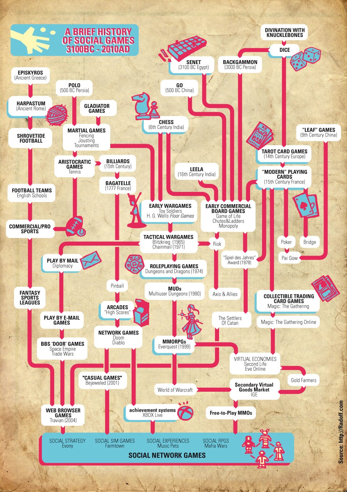

Requirements

EValuation
Attendance and participation:
15%
Discussion Board:
10%
Mid Term Paper:
20%
Final Paper:
25%
Group Virtual World Project
Presentation 15%
Virtual Presentation 15%
Required Books
available at the U Bookstore and other fine booksellers
Italo Calvino If on a Winter’s Night a Traveler
Jorge Luis Borges Labyrinths: selected stories & other writings
Stanislaw Lem Microworlds
Alan Moore The League of Extraordinary Gentlemen
Murakami Haruki Hardboiled Wonderland
Philip Roth The Plot Against America
FILMs are on reserve
As a portion of your homework some weeks, you are responsible to watch a film or several episodes of a TV show on reserve at the library or available freely over the internet. For your convenience an OPTIONAL screening time for the class has been set for MONDAY EVENINGS 4-7PM. RM 214. PATEE Library. 2nd Floor. Capacity 25. (Questions call (814) 865-3616)
IF YOU OPT NOT TO WATCH THE FILM DURING THE SCREENING TIME, YOU ARE STILL RESPONSIBLE TO WATCH THE FILM ON RESERVE BEFORE TUESDAY’S CLASS.
DVDs are on reserve at the Media Center in the Library.
Requirements
Requirements
15% Preparation, Participation, and Attendance
Students are expected to attend all class meetings.
Students are expected to complete all of the readings for the week in time for class.
If a student has extenuating circumstances regarding either of these requirements, that student should contact me as soon as they are aware of the situation.
In order to receive credit for attendance, you must not only be present in class, but also bring marked copies of the readings to class and be prepared to give your opinions on the reading. You must also bring any written material assigned for that class meeting.
In order to receive credit for in-class discussion, you must email me a monthly self-assessment report, assessing their own in-class performance. The self-assessment should include the words “self-assessment” in the subject header and a letter grade of A, B, C, D, or F. Due dates are posted on the schedule.
10% Discussion Board
Students are expected to participate in an electronic newsgroup (bulletin board), discussing their thoughts on the readings and class discussions. Topics and the manner of the discussion will be decided by DISCUSSION LEADERS. Each and every student will take a turn being a discussion leader. You will have free rein here to discuss topics that do not get raised in class or in the readings. This is a chance to find out what your classmates think about your ideas. It is also a chance for those who are less talkative in class to recover some points for participation.
A given week's discussion leader must write and send at least two paragraphs (10 sentences) by FRIDAY at midnight. They should be sure to quote from the following week’s readings and cite the film.
DISCUSSANTS (that is, everyone else) must write at least one response by the following MONDAY, at midnight. Responses may be any length five sentences or over. They can respond to any one or all of the discussion leaders for a given week.
All students must SIGN UP for a week to be a DISCUSSION LEADER by the third week of class. Due January 27.
20% Mid Term Paper
A 3-5 page paper relating course readings to a virtual world with which you have familiarity will be due March 3.
See Mid Term Paper Guidelines to be posted here.
25% Final Term Paper
5-7 page paper relating two virtual worlds. Due May 2.
See Final Paper Guidelines to be posted here.
30% Virtual World Group Project
A Group Project to be approved by professor Abel will consist of two components: an in-class presentation and an the creation of a virtual space (wiki, website, or other).
15% in-class presentation
15% virtual space
Sign up for project by third week in class. January 27.
See Project Guidelines to be posted here.